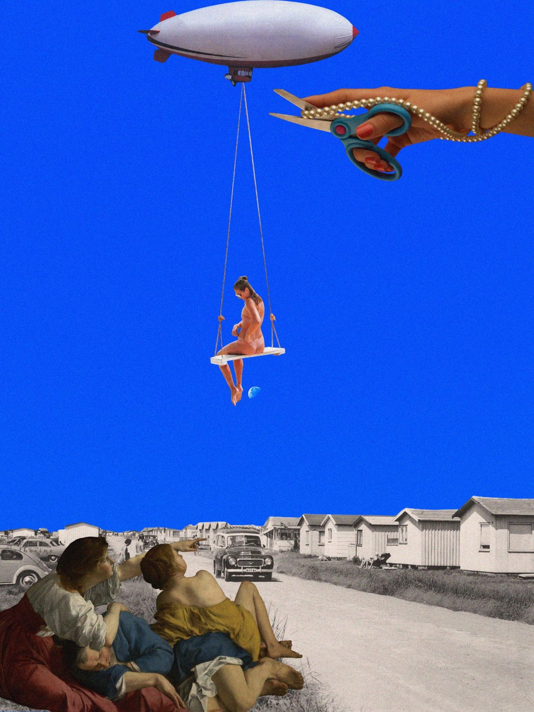

ABOUT ME
你好，我是
杜洪萱。
我的创作涉及视频剪辑、视觉设计与文案，也包括社交媒体的内容策划和账号运营。
PROJECT EXPERIENCE
从内容策划到项目传播
参与艺人及工作室账号运营与影视项目宣传，将节点创意、文案策划与多平台执行结合，跟进传播表现与数据复盘。相关内容取得百万级播放，项目传播达到千万级曝光。
7.1万《生万物》宣传内容单篇点赞
10万+王天辰小红书内容单篇点赞
以上为参与项目的内容表现，具体职责见各项目案例。
INDEPENDENT CREATION
用影视与美学创作积累影响力
独立完成选题、文案、剪辑、视觉设计与账号运营，并根据数据反馈持续优化内容。代表作品在多个平台获得传播，也带来了用户互动与新增关注。
194.44万小红书单篇观看
16.9万该篇点赞 · 新增粉丝395位
853.2万抖音单篇播放
8,253B站账号粉丝
数据为已提供截图所示记录，后续持续更新。
- 内容制作
- 影视剪辑、动态歌词、图片精修、调色与视觉设计
- 账号运营
- 内容规划、平台发布、用户反馈、舆情跟踪与数据复盘
- 宣传策划
- 节点创意、项目文案、多平台内容与执行协作

视觉探索 / 旧版参考01 / MY SOCIAL MEDIA
自媒体账号运营
抖音 · 微博 · 小红书 · TikTok · B站
策划、文案、剪辑、运营、修图与设计均由本人独立完成。
各平台账号表现、代表内容与运营复盘。
02 / PERSONAL CREATION
自媒体创作作品
海报、创意拼贴与影像实验。
03 / PUBLICITY PROJECTS
宣传策划与项目经验
项目目标、策划思路、内容执行与传播成果。